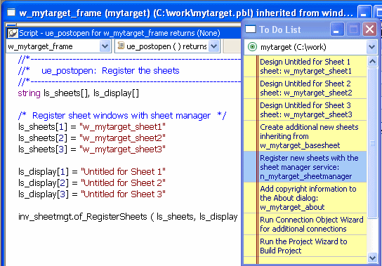

PowerBuilder provides a variety of tools to help you with your development work. There are several ways to open tools:
Table 1-5 lists the tools available in the PowerBar. Some of these tools are also listed on the Tools menu.
| Tool | What you use the tool for |
|---|---|
| To-Do List | Keep track of development tasks you need to do for the current target and create links to get you quickly to the place where you need to complete the tasks. For information, see "Using the To-Do List". |
| Browser | View information about system objects and objects in your PowerScript target, such as properties, events, functions, and global variables, and copy, export, or print the information. For information, see "Browsing the class hierarchy". |
| Library painter | Manage libraries, create a new library, build dynamic libraries, and use source control. |
| Database profiles | Define and use named sets of parameters to connect to a particular database. For information, see Connecting to Your Database. |
| EAServer profiles | Define and use named sets of parameters to connect to a particular EAServer host. For information, see Connecting to Your Database. |
| Database painter | For information, see Chapter 16, "Managing the Database." |
| File Editor | Edit text files such as source, resource, and initialization files. For information, see "Using the file editor". |
| Debugger | Set breakpoints and watch expressions, step through your application, examine and change variables during execution, and view the call stack and objects in memory. For information, see Chapter 32, "Debugging and Running Applications ." |
Table 1-6 lists the tools you can launch from the Tool tab page in the New dialog box. You can also launch the Library painter and File Editor from this dialog box.
| Tool | What you use the tool for |
|---|---|
| Migration Assistant | Scans PowerBuilder libraries and highlights usage of obsolete functions and events. For information, see the Migration Assistant online Help. |
| DataWindow Syntax | Helps construct the syntax required by Modify, Describe, and SyntaxFromSQL functions. For information, see DataWindow Syntax online Help. |
| Profiling Class View, Profiling Routine View, and Profiling Trace View | Use trace information to create a profile of your application. For information, see Chapter 33, "Tracing and Profiling Applications ." |
| Web DataWindow JavaScript Generator | Generate a JavaScript file that contains DataWindow methods you want to associate with a specific DataWindow object. For information, see the DataWindow Programmer's Guide . |
The To-Do List displays a list of development tasks you need to do. You can create tasks for any target in the workspace or for the workspace itself. A drop-down list at the top of the To-Do List lets you choose which tasks to display. To open the To-Do List, click the To-Do List button in the PowerBar or select Tools>To-Do List from the menu bar.
The entries on the To-Do list are created:
Some To-Do List entries created by wizards are hot-linked to get you quickly to the painter (and the specific object you need) or to a wizard. You can also create an entry yourself that links to the PowerBuilder painter where you are working so you can return to the object or script (event/function and line) you were working on when you made the entry. When you move the pointer over entries on the To-Do list, the pointer changes to a hand when it is over a linked entry.
For example, if you generate an MDI application with the Template Application wizard, one of the linked entries on the To-Do List reminds you to register new sheets with the sheet manager service, which is a nonvisual user object created by the wizard. Double-clicking this entry automatically opens the Window painter and the Script view where you register new sheets.

You can export or import a To-Do List by selecting Export or Import from the pop-up menu. Doing this is useful if you want to move from one computer to another or you need to work with To-Do Lists as part of some other system such as a project management system.
 Linked entries If you import a list from another workspace or target, or
from a previous version of PowerBuilder, linked entries will display
in the list but the links will not be active.
Linked entries If you import a list from another workspace or target, or
from a previous version of PowerBuilder, linked entries will display
in the list but the links will not be active.
Table 1-7 tells you how to work with entries on the To-Do List.
One of the tools on the PowerBar and Tools menu is a text editor that is always available. Using the editor, you can view and modify text files (such as initialization files and tab-separated files with data) without leaving PowerBuilder. Among the features the file editor provides are find and replace, undo, importing and exporting text files, and dragging and dropping text.
The file editor has font properties and an indentation property that you can change to make files easier to read. If you do not change any properties, files have black text on a white background and a tab stop setting of 3 for indentation. Select Design>Options from the menu bar to change the tab stop and font settings.
 Editor properties apply elsewhere When you set properties for the file editor, the settings
also apply to the Function painter, the Script view, the Source
editor, the Interactive SQL view in
the Database painter, and the Debug window.
Editor properties apply elsewhere When you set properties for the file editor, the settings
also apply to the Function painter, the Script view, the Source
editor, the Interactive SQL view in
the Database painter, and the Debug window.
To move text, simply select it, drag it to its new location, and drop it. To copy text, press the Ctrl key while you drag and drop the text.